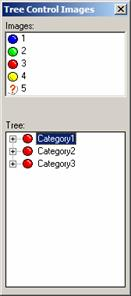
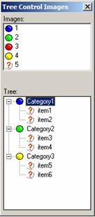

Adding Images to a Tree Control
You can specify that the tree control should show images next to each entry in the tree. In addition, you can specify different images for when the branch of the tree is closed and when it is open.
To use images in a tree control, you specify the list of images to use in the format string (i.e. between the % ?.% delimiters in the control definition. The syntax for specifying the images is:
%I=image_list% |
where image_list can be:
a CR-LF delimited list of images
a comma delimited list of images
a variable name preceded by "@" (e.g. @images), where the variable refers to a CR-LF delimited list of images.
Then, before any entry on a tree that contains an image, add a number, which corresponds to the number of the image in the image_list.
If a different bitmap is displayed when a branch of a tree is open, use an optional '+' followed by the number of the image to show when the branch is open. for the open dialog. A Comma should be placed after the prefix image number.
For example, consider the following entry in an array that is displayed as a tree control.
1+2,Cars.3,Corvette |
The top level 'branch' of the tree is Cars, it displays image 1 if the branch is closed, image 2 if the branch 'cars' is open. The 'Corvette' leaf displays image 3.
Let's look at an example. Consider the following script.
images = <<%dlg% a5_ball_blue a5_ball_green a5_ball_red a5_ball_yellow a5_orange_question_small %dlg% list = <<%dlg% 3+1Category1.5item1 3+1Category1.5item2 3+2Category2.5item3 3+2Category2.5item4 3+4Category3.5item5 3+4Category3.5item6 %dlg% ui_dlg_box("Tree Control Images",<<%dlg% {wrap=40} Images:; [%O={I=:1} {@#}%.30,7mage_name^#images]; {lf}; Tree:; [%S=BLR;I=@images%.30,15item_selected^ %dlg%) |
The above script displays this dialog box:

Lesson 12: Tree Control with Images

Lesson 12: Tree Control with Images (showing the tree opened)
When the tree control is closed, each of the three top-level entries shows the red ball (image number 3. When "Category1" is opened, it shows the blue ball (image number 1). If you look at the definition of the first entry in the tree control, you see:
3+1Category1.5item1 |
The 3+1 indicates image 3 (red ball) for the closed state, image 1 (blue ball) for the open state, and image 5 (orange question mark) for the branch.
Supported By
Alpha Five Version 5 and Above
Limitations
Desktop applications only.
Next